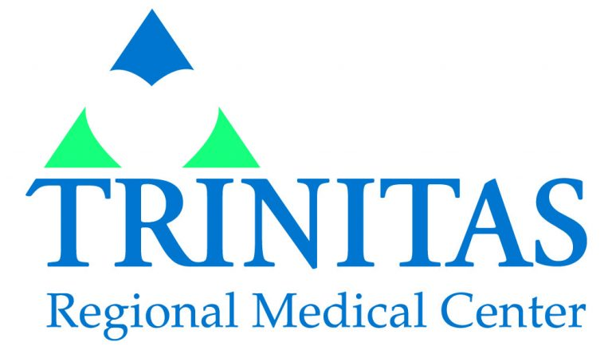

Jersey City, New Jersey Feb 2018 - Current
Senor Receptionist
- Provide administrative support for chiropractic\physical therapy practice.
- Successfully coordinated across all department to manage insurance pre-certification for all clients, updated to medical files, and
- appointments for three doctors
- Act as liaison between doctors and patient to ensure patient information is accurately accessed, reviewed, and communicated to clients,
- such as MRI scripts and insurance.
- Intricately involved in working with Harborsides billing department and clients to understand any anomalies in their invoices and help to
- resolve issues as they arise.
- Provide external communication to clients and insurance companies in the form of e-mail and official letters.

Elizabeth, New Jersey April 2017 - Feb 2018
Registrar, Unit Secretary (ICU, Oncology & Surgical)
- Verified insurance benefits and determine pre-certification/authorization status via online resources.
- Secured all signatures necessary for treatment, release of medical information, assignment of insurance benefits, and payment of service
- from legally responsible parties.
- Deescalated 50+ calls daily on patients-related inquires and escalated 20+ calls on complex queries to office management while
- considering option to resolve issues.
- Complied, filed, and documented running logs of admission and discharge dates, time, and location, guaranteeing the successful transfer
- of information from clinicians to the patient's
- family to reduce adverse events and prevent readmission.
- Assisted physicians and nurses with STATS orders by alleviate wait time by running errands within the hospital floors, labs, and
- pharmacy to prevent a code blue emergency call.